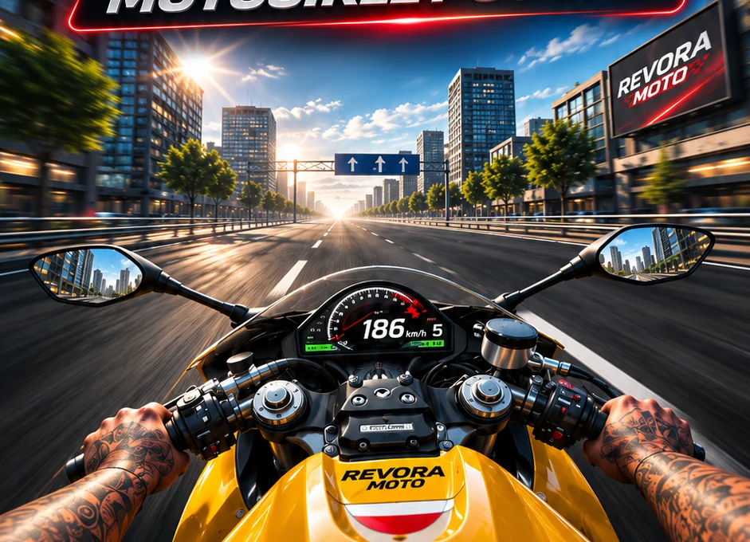

REVORA / OyunASLINA YAKIN.
ASLINA YAKIN.
KURALLARINA UYGUN.
Viraja girerken motorun ağırlığını, gazı açarken tepkisini ve kayarken kontrolü hissedeceğin bir motosiklet simülasyonu.
Simülasyon odaklıTek oyunculuŞehir ve otobanPC & Android çalışmaları

01 / DENEYİMYOLU OKU.

02 / KAMERAHER AÇIDAN.
Hikâye değil, sürüşMOTORU
MOTORU
TANI.
REVORA MOTO; gerçekçi viraj tepkileri, karakter animasyonları, farklı motor sesleri, kokpit detayları ve sürüş tercihleri üzerinde geliştirilmiş bir deneyim sunmayı hedefliyor.
01
SERBEST SÜRÜŞ
Rotanı kendin belirle, şehri veya uzun yolları keşfet.
02
KARİYER
Farklı sürüş hedefleri ve ilerleme sistemiyle yeteneklerini geliştir.
03
GARAJ
Motorunu seç, sürüşüne ve tarzına uygun düzenlemeler yap.
Daha fazlasını keşfet
ÖZELLİKLER ↗DETAYLARA İN.
Kontroller, kamera modları, modifiye seçenekleri ve fazlası.